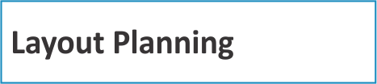
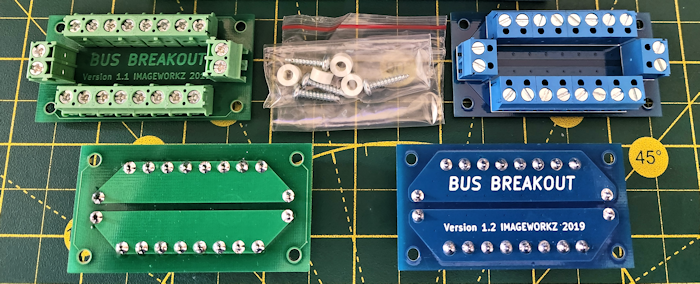

|
 |
Many, if not most, modellers detest the job of wiring the layout. And I get that. It can be a real chore working under the layout. It can also be a challenge to remember what all the various wires actually do. And, of course, we would all prefer to spend the time that wiring takes on other things like running trains, building structures, and doing scenery. But, it is a necessary evil. My approach has always been to treat it like just another aspect of the hobby, and to do it in an organized, logical fashion. I suppose I'm in the minority, since electronics is a second hobby for me, but I really don't mind doing wiring. Although, at my age, working under the layout often gives me pain in parts of my body I forgot existed. Oh well... I use DCC on my layout so that will always be my focus on everything I talk about below. But similar principles apply for DC layouts. I was determined to avoid any soldering beneath the layout and I have managed to meet that goal.
Power Handling versus Wire Choice Choosing suitable gauges of wire for different functions may seem like a black art but it all comes down to how much power a given wire will ever need to handle. Common DCC systems have a maximum output of 2 to 10 amps. Large layouts may employ a power booster but again these usually are 10 amp or less. The wiring that feeds this power around the layout is the 'DCC bus'. Many layouts also have a separate, secondary DC supply for purposes such as structure lighting, switch machines, crossing signals, etc. This wiring is the 'accessory bus'. It would be rare for this bus to ever handle more than a couple of amps in total. Some layouts are divided into multiple 'power districts'. Each district is fed separately from the base power supply or a booster. This prevents a problem in one district from affecting the rest of the layout. Each district, even if there is only one, should have an electronic circuit breaker to protect the DCC base power station. Regardless, the DCC bus in a district will never need to handle more current than the base unit or booster can provide. What all this means is that you do not need a DCC bus made from wire capable of handling 40 amps on a 5 amp system. I have seen instances where peope have used 12-gauge or even 10-gauge wire - this is major overkill, expensive, difficult to work with, and totally unnecessary. I have a 5-amp NCE system which is perfect for me. My DCC bus is 18-gauge, stranded wire (sometimes referred to as lamp cord). Depending on which source you reference, it has a rating of 10 to 12 amps. More than adequate for my needs and quite inexpensive. Mine is a two-wire, siamesed pair, with a red and a black wire, making polarization easy. I got a 100-foot roll from Amazon for about $16. I used the same wire for my accessory bus simply because I had plenty. I chose to use 22-gauge solid wire for my track power feeders. I dropped power feed wires from every section of track except for turnouts and some very short filler pieces. Thus, the small wire is adequate because there are multiple wires delivering power to the rails at the same time. Even on their own, each feed point can handle up to 2 amps and I will never have more than 1 or 2 locomotives on any one piece of track. I have no accessories that require high current and used stranded wire ranging from 20 to 24-gauge for everything.
Apologies for the above Pink Floyd reference... Before running bus wires or doing any other work under the layout, I needed to know the exact position of each switch machine so I could avoid any conflicts. The easiest solution was to actually install them! The first step was to center the turnout points. Two small strips of card stock, folded in half, did the job. The hole in the throwbar was thus in the center of the turnout's movement range.
The actuator rod that comes with the MTB MP1 switch machine is .044" diameter and is quite stiff. I wanted a bit more spring in the rod so I cut mine from .032" music wire instead, which the MP1 easily accomodates. I made mine a bit longer to make it easier to install the machine. I needed the machine to be in the center of its throw. This is easily done by briefly applying 12V to the power terminals until centered. I attached the actuator rod to the machine and headed under the layout. I fed the rod up through the hole in the throwbar and aligned the face of the machine with the throwbar so motion would be in the proper directions. When satisfied with the alignment, I held the machine in place and used a pencil to mark the mounting slots on the plywood. I removed the machine and drilled a very small and short pilot hole in the center of the marked slot for the 2.5mm screws that I used. I put the machine back in place and snugged it up with the screws, being careful not to cause any damage by overtightening. I attached temporary wires to the MP1 power terminals and, from above, applied power and made sure the turnout was throwing correctly in both directions. If not, I made minor adjustments underneath and repeated the process until satisfied. These machines were very east to install.
With all the switch machines in place, it was time to get wired!
Obviously, the bus wiring starts from the source. I had already decided on a corner of the room where I would locate all the control equipment. So that was where I started installing both the DCC bus and also the accessory bus. I installed a 2-row terminal block under the layout, leaving adequate space for an NCE EB1 circuit breaker and a fuse for the accessory bus. The DCC track feeds, DCC programming feeds, and the accessory bus wires would connect here. I decided to run the DCC bus toward the rear of the shelf and the accessory bus toward the front. As the bus wires progressed around the layout I inserted breakout boards in the buses to enable easy connections. These breakout boards (shown below) allow for solderless connections and are something I made for myself and, for a while, also offered them for sale on my former Imageworkz page. The green boards handle up to 8 amps continuous and the blue ones handle up to 15 amps continuous. I use the green for my accessory bus and the blue for DCC.

If you have comments (positive or negative), suggestions, questions, or have found any
|
||
|
|
© Copyright 2026 by Brian Ferguson - All Rights Reserved |